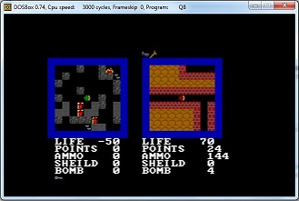
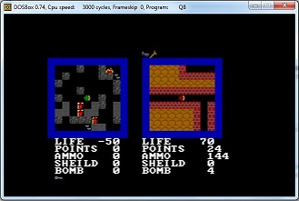
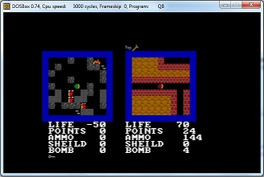

This is a list of programs i built back on the 90's with quick basic 4.5
I have it here simply for reference if anyone wants to see what what could be done with quick basic.
You can still run the programs using a DOS emulator like DosBox, or a boot-able Free Dos drive.
The other option is QB64. It was built to be compatible with the old quick basic syntax.
Shooter
This was one of my first artificial intelligence programs. It has a
player on the left and right of the screen. One of the players can
be human or computer player, so you can play with a friend or solo.
The center blocks move up and down and will block shoots. I added
this to put some fun dynamic to the game.
3D Maze
I built this program to push the limits of what i could do with QuickBasic.
It was really challenging and due to only having a 486 computer it didn't run very fast.
Some of the things I did differently was to use a read/data to load array tables,
and sine/cosine for the math to draw the walls properly.

Power elf
This program was months in the making. It has 2 players and was built around a race
to the finish. It has many features such as hand to hand weapon, ranged weapon
and bombs that can be placed. There are many types of keys and doors. Teleporters
breakable and pushable walls and the graphics animate. When a player dies he is sent
to a level specific waiting area until next round.
There's also 2 types of artificial intelligence built in to the game. One fallows
a path and the other will search the maze for the players.
Jropout
This was a simple game I built, the idea is the ship is dropping down and your trying to dodge the incoming stars.
Tunnel
I built this when I was experimenting with line drawing commands, it takes a line with
a with cycling colors and makes what looks like a tunnel with patterns on the walls.
It don't do much but it looks cool.
Box Screen saver
This is like the tunnel program, experimenting with line drawing commands.
this one takes 4 box shapes and cycle the color and size giving a old
school screen saver effet.
Trace
This was kind of like a game. But was more built to figure out a way to have a computer controlled player search a dynamic maze to find the player.
I call the maze dynamic because you can change it how ever you want and you don't have to change any code for the computer controlled player.
This was latter used in the power elf game I built.
The 2nd part of the screen is showing the pathing logic as the search runs for debugging


 
